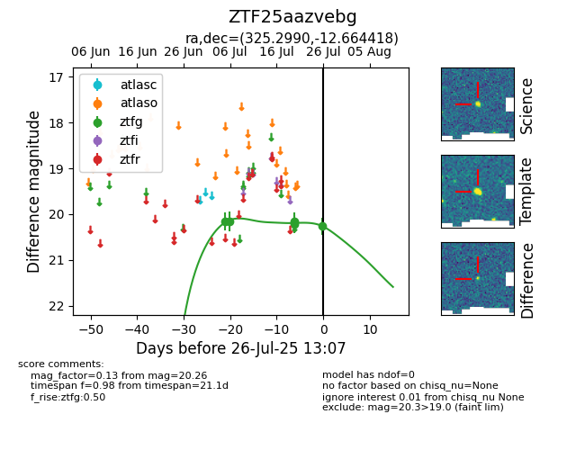

Target ZTF25aazvebg at 2025-07-26 13:07, see:
FINK: fink-portal.org/ZTF25aazvebg
Lasair: lasair-ztf.lsst.ac.uk/objects/ZTF25aazvebg
ALeRCE: alerce.online/object/ZTF25aazvebg
alt names
ZTF25aazvebg (ztf,fink)
coordinates:
equatorial (ra, dec) = (325.2990,-12.66442)
galactic (l, b) = (41.2361,-43.30903)
photometry
last ztfg=20.26
5 ztfg detections
